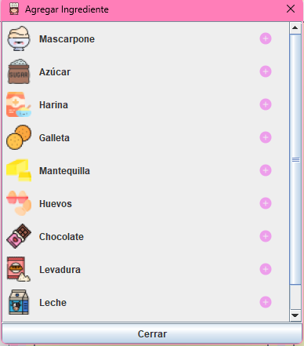

Agregar Ingredientes
En esta sección puedes añadir ingredientes a tu receta utilizando una selección predefinida.
Pasos:
- Haz clic en el botón Agregar ingredientes.
- Selecciona los ingredientes deseados de la lista.
- Presiona Aceptar para añadir los ingredientes a tu receta.
